Plots
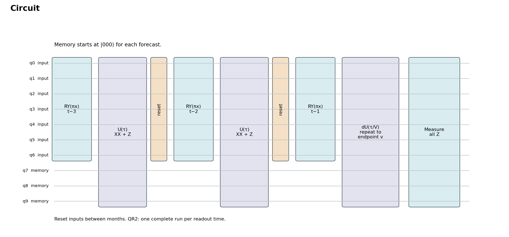
Seven inputs pass through three months of evolution with three memory qubits. Inputs reset between months. QR2 needs separate runs for its two readout times; backend support remains unverified.
PDF · Data 1 · Data 2 · Data 3
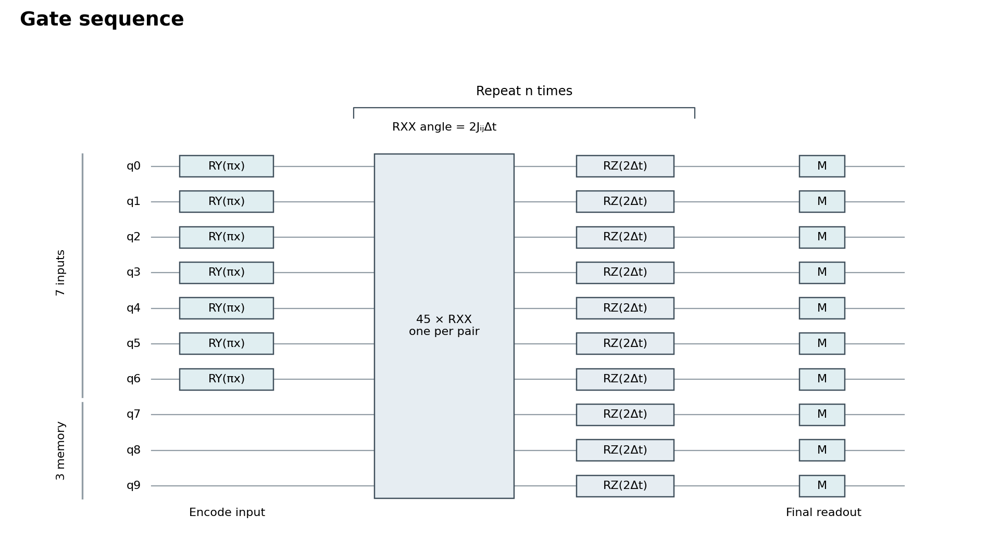
RY encodes each input. One Trotter step applies 45 pairwise RXX gates, then RZ on every qubit. Only this evolution block repeats; measurements occur at the final readout.
PDF · Data
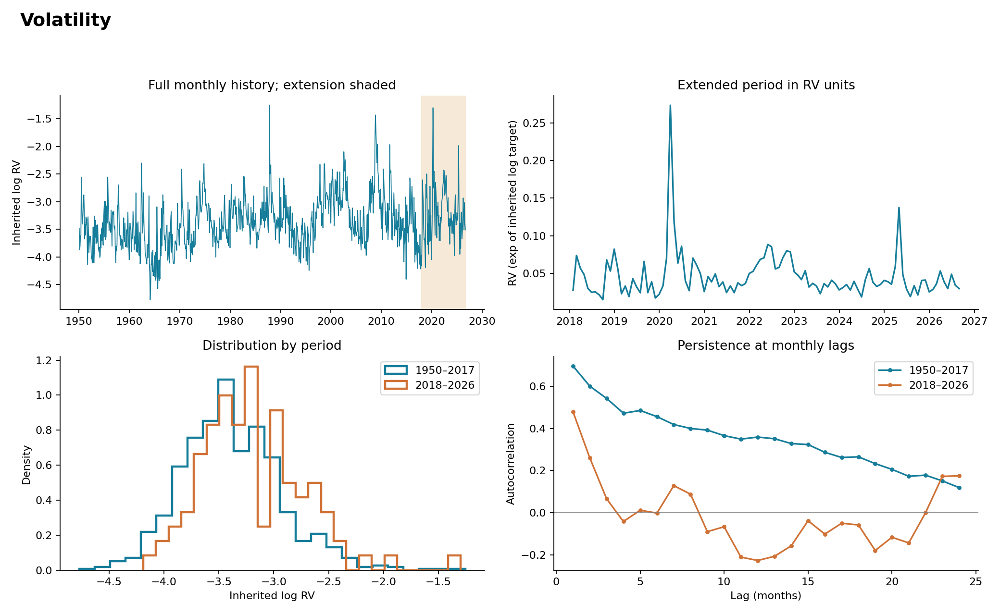
920 monthly observations. Volatility has sharp spikes and short-term persistence; the extended period has weaker autocorrelation at longer lags.
PDF · Data 1 · Data 2
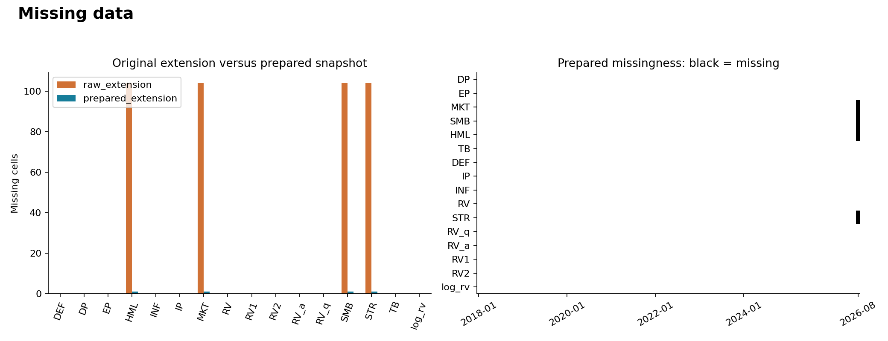
Preparation reduced missing values from 416 to 4. The remaining August factors prevent September forecasts that need those inputs.
PDF · Data
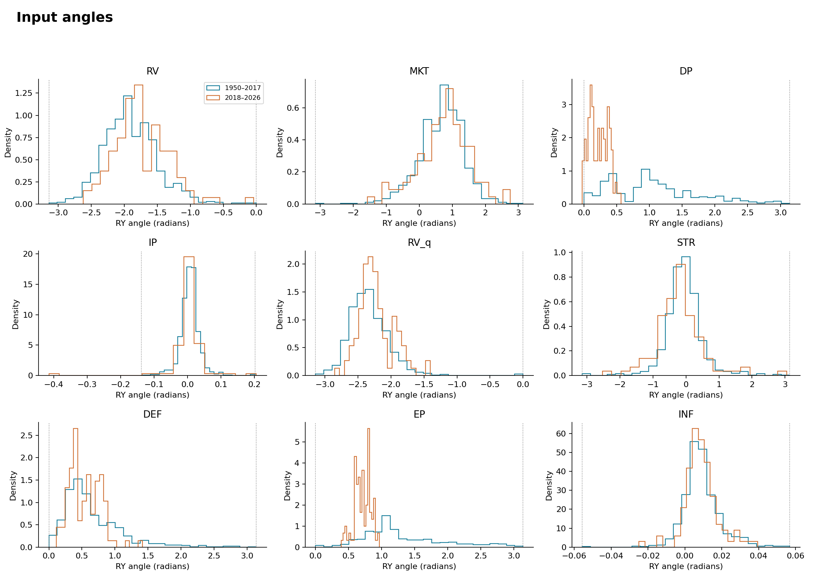
Each input becomes a rotation angle: π × value. Four DP values and two IP values exceed their historical ranges; inputs were not clipped.
PDF · Data 1 · Data 2
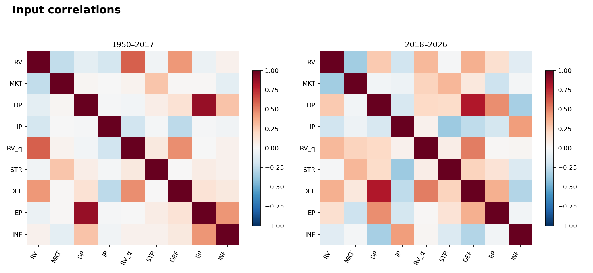
DP and EP are strongly correlated. Some relationships change in the extended period, so historical input relationships may not remain stable.
PDF · Data 1 · Data 2
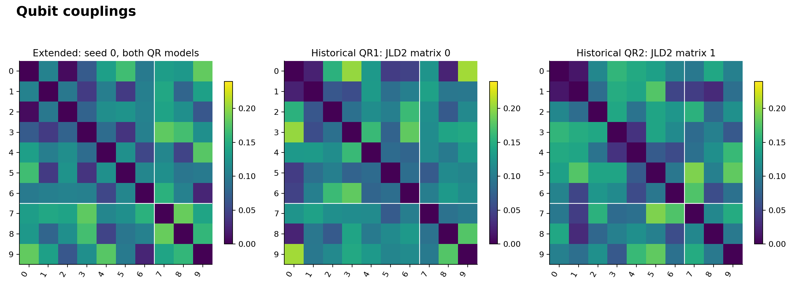
All 10 qubits interact: 45 pairs per Trotter step. White lines separate seven input qubits from three memory qubits.
PDF · Data 1 · Data 2 · Data 3
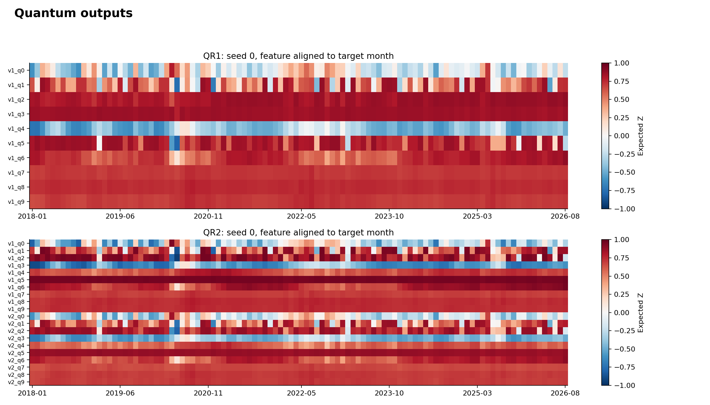
Each row is a qubit’s Z expectation at one readout time. Several channels change little across months, suggesting overlapping or weakly varying information.
PDF · Data 1 · Data 2
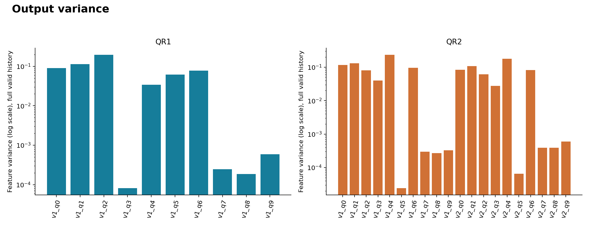
The least-variable channels have variances of 0.000081 (QR1) and 0.000024 (QR2). Small changes may be difficult to resolve with limited shots.
PDF · Data
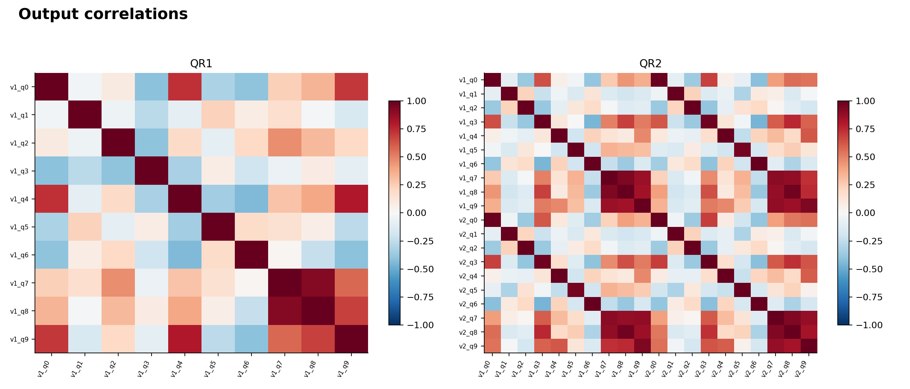
Several memory-qubit outputs are strongly correlated. This suggests redundancy, but removing outputs or qubits requires testing forecast accuracy.
PDF · Data 1 · Data 2
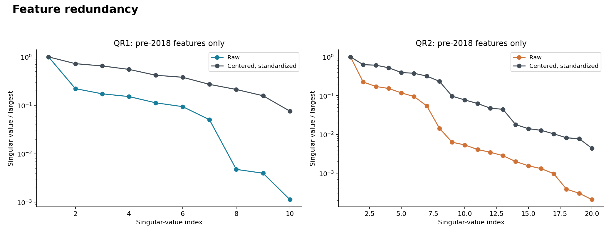
Small singular values indicate nearly overlapping feature directions. QR2 has more of these directions; extra outputs may add little independent information.
PDF · Data
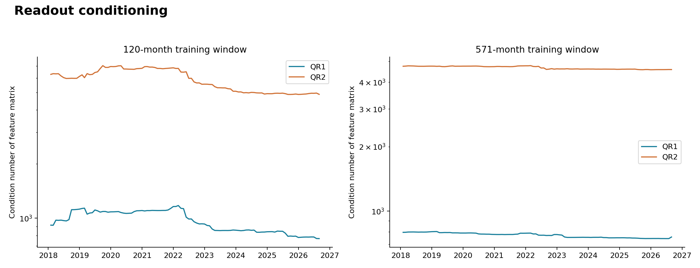
Higher values mean greater sensitivity to small input errors. Median condition numbers are about 967 vs 5,982 for QR1 vs QR2 at 120 months—roughly a sixfold difference.
PDF · Data 1 · Data 2
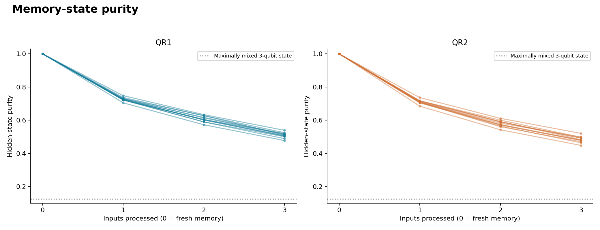
Across 12 histories, average purity falls from 1 to 0.509 (QR1) and 0.484 (QR2). Memory becomes mixed even without hardware noise; purity alone does not measure usefulness.
PDF · Data 1 · Data 2
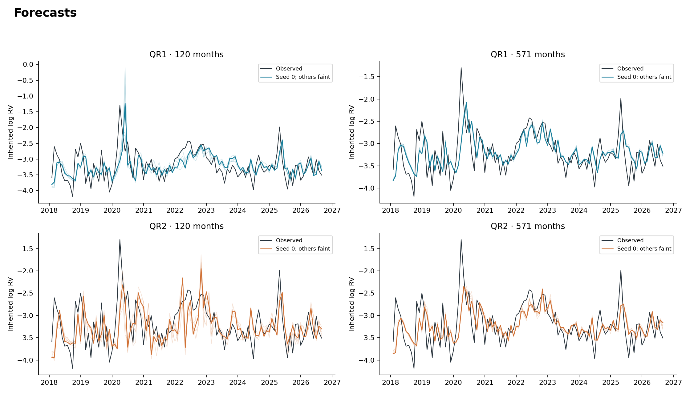
Black shows observed volatility; colored lines show five reservoir seeds. Both models miss some large spikes. Faint lines show seed variation, not confidence intervals.
PDF · Data
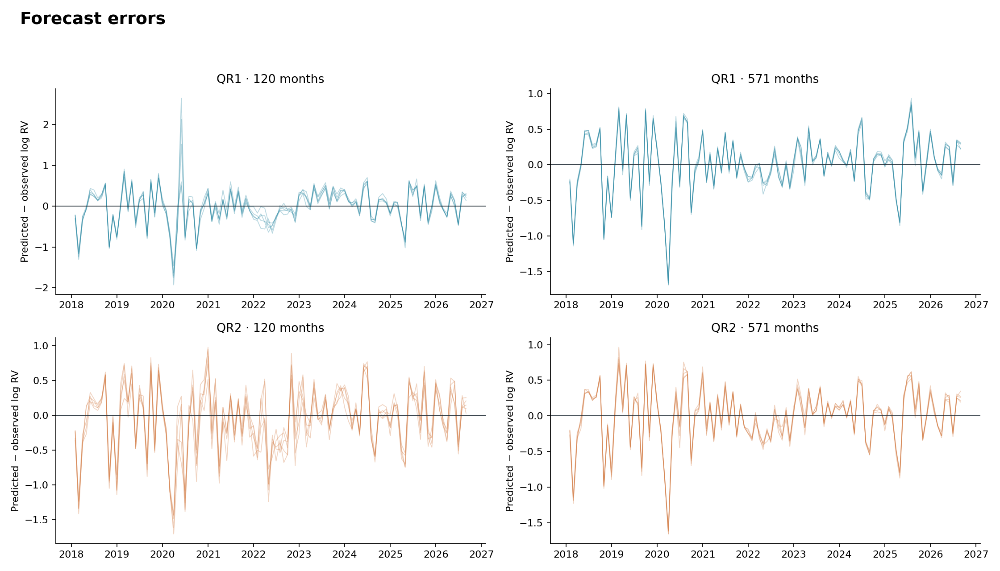
Error = predicted − observed log volatility. The largest errors cluster around the 2020 volatility shock; positive errors mean overprediction.
PDF · Data
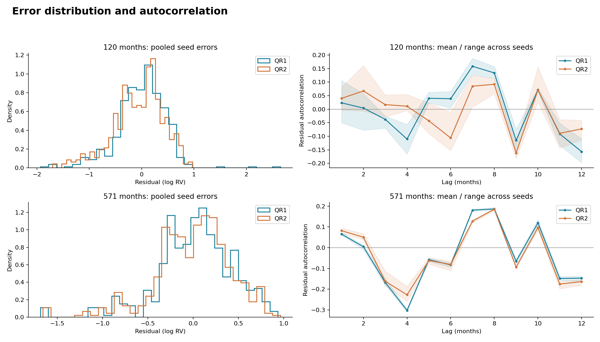
Errors have tails and some repeated lag patterns. Shading shows variation across seeds, not confidence intervals.
PDF · Data 1 · Data 2
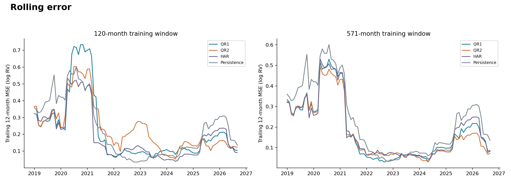
Trailing 12-month squared error peaks around 2020–2021. Model rankings change over time; neither quantum model consistently has the lowest error.
PDF · Data
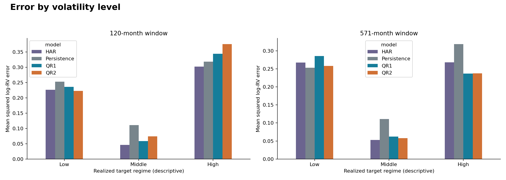
Errors are lowest in the middle-volatility group. Low and high volatility are harder to forecast; groups use historical thresholds and observed outcomes.
PDF · Data
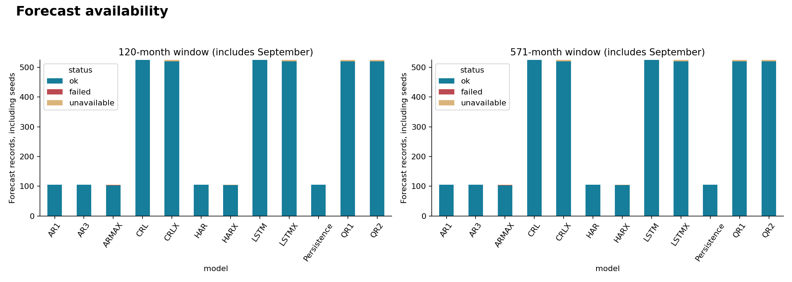
Two ARMAX fits failed and 44 records were unavailable. Counts include unscored September forecasts; models with five seeds have more records.
PDF · Data 1 · Data 2
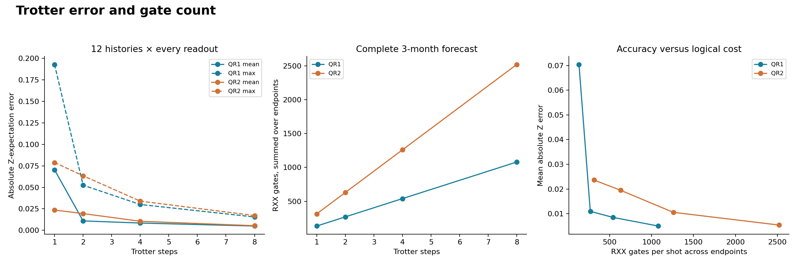
From 1 to 8 steps, mean Z error falls from 0.0704 to 0.0050 (QR1) and 0.0236 to 0.0054 (QR2), while gate counts rise eightfold. These are logical gates, not compiled IonQ counts.
PDF · Data 1 · Data 2 · Data 3
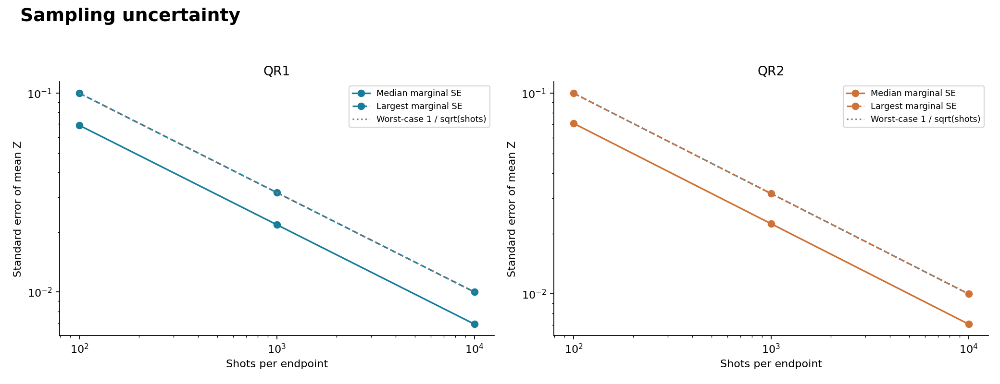
Worst-case Z standard error is 0.10, 0.032, and 0.01 at 100, 1,000, and 10,000 shots. This estimates sampling uncertainty only; it excludes hardware noise.
PDF · Data 1 · Data 2